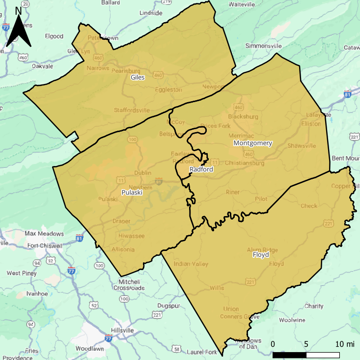
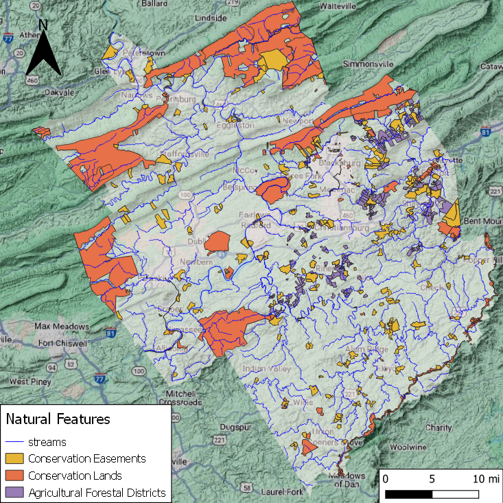
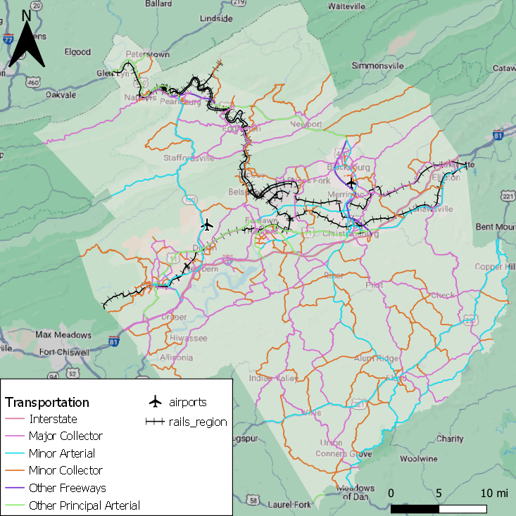
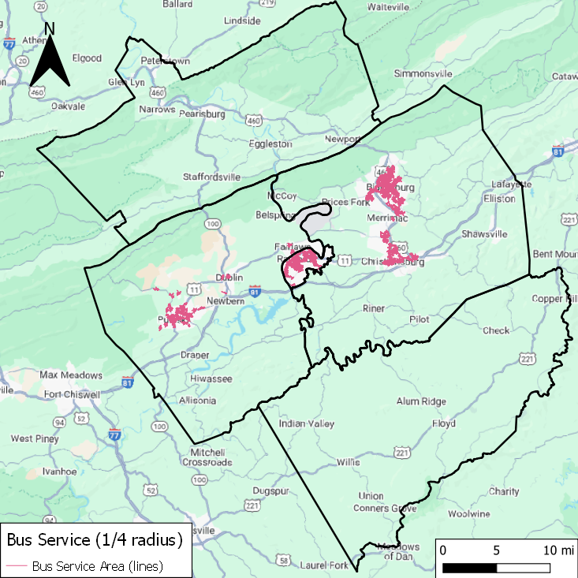
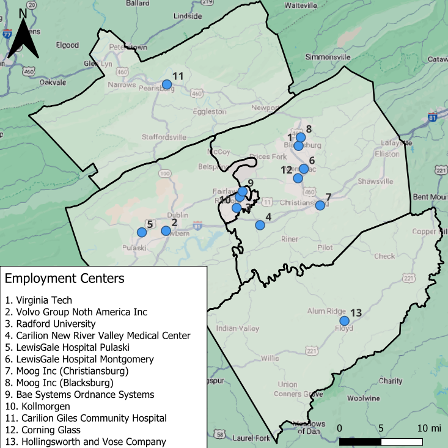
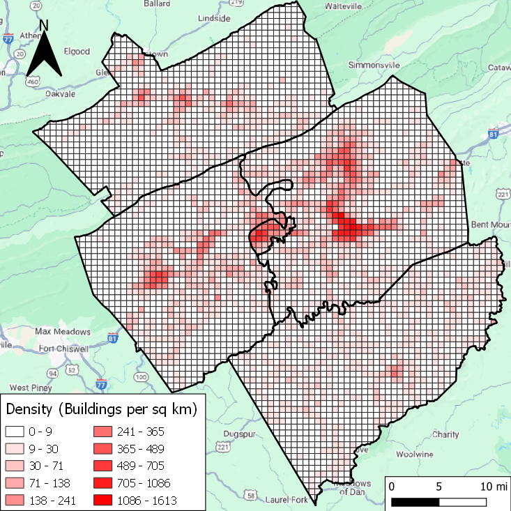
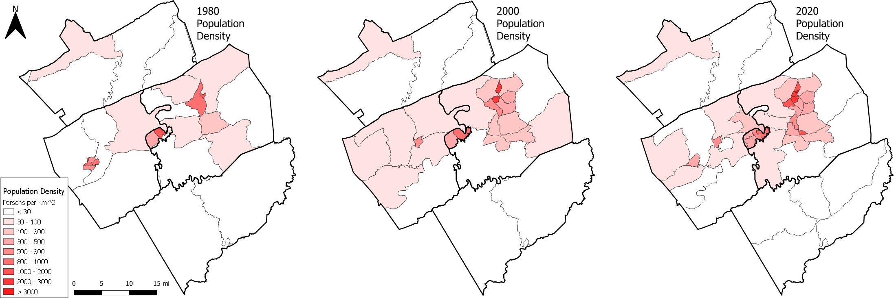

Brandon Luton
Home
CS Projects
GIS Projects
Resume
Boundary Map
Natural Features
Transportation Map
Bus Service Map
Locations of Employment
Building Density
Population Density Over Time
New River Valley Regional Analysis Maps
      